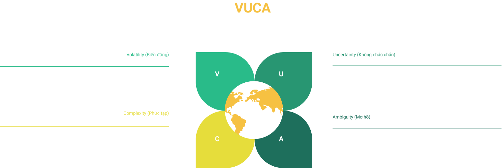

#lifestyle #travel #volunteer #knowledgesharing
Bình tĩnh sống giữa trạng thái “VUCA”
Sưu tầm: Bình tĩnh sống giữa trạng thái “VUCA”.
25/07/2021
Bài viết được mình sưu tầm vào đợt dịch covid-19 lần thứ 4, khi có chỉ thị giãn cách toàn 19 tỉnh miền nam :))

Khái niệm “VUCA” dùng để mô tả về thế giới “đa cực”, được xác lập khi thỏa 4 điều kiện:
Biến động (Volatility), Không chắc chắn (Uncertainty), Phức tạp (Complexity) và Mơ hồ
(Ambiguity). Những ảnh hưởng từ dịch Covid-19 đã một lần nữa đặt thế giới vào tình trạng
“VUCA” kể từ sau cuộc khủng hoảng tài chính toàn cầu năm 2008-2009. Chúng ta cần làm gì để
bình tĩnh sống và nắm thế chủ động giữa trạng thái “VUCA”?
Khái niệm VUCA được Trường Chiến tranh Quân đội Mỹ công bố vào đầu những năm 90 để mô tả về thế giới “đa cực” xuất hiện sau Chiến tranh Lạnh. Lần gần đây nhất thế giới của chúng ta rơi vào tình trạng VUCA là trong thời gian diễn ra cuộc khủng hoảng tài chính toàn cầu năm 2008-2009. Và phải nhìn nhận rằng dịch Covid – 19 với những tác động sâu sắc mà nó mang lại đã đặt thế giới vào trạng thái VUCA một lần nữa.
Theo báo cáo ngày 10/06/2020 của Tổ chức Hợp tác và Phát triển Kinh tế (OECD - Organisation for Economic Co-operation and Development) dự báo nền kinh tế toàn cầu sẽ tiếp tục suy giảm thêm 6% trong năm nay trước khi có khả năng hồi phục vào năm 2021. Nền kinh tế toàn cầu đang rơi vào thời kỳ suy thoái thời bình tồi tệ nhất trong một thế kỷ.
OECD cũng cảnh báo rằng nếu có thêm một làn sóng nhiễm Covid-19 nữa sẽ dẫn đến sự gián đoạn khôi phục kinh tế và gây ra nhiều vết thương kinh tế hơn. Đầu tháng 6, World Bank cũng đưa ra dự báo rằng, nền kinh tế toàn cầu sẽ giảm 5,2% trong năm 2020, trong khi Quỹ Tiền tệ Quốc tế (IMF) ước tính đã giảm 3% trong tháng 4. Đây quả là những dự đoán ảm đạm được đưa ra bởi các tổ chức tài chính uy tín hàng đầu thế giới.
Sự suy thoái của nền kinh tế toàn cầu kéo theo những hệ lụy ảnh hưởng trực tiếp đến tài chính cá nhân: giảm thu nhập, mất việc, nguy cơ phá sản chực chờ… Nhờ những nỗ lực chung, chúng ta đang an toàn trước Covid – 19 và nền kinh tế của chúng ta không phải hứng chịu sự tàn phá nặng nề như một số quốc gia khác. Nhưng điều đó không có nghĩa là sự suy thoái chung không ảnh hưởng đến chúng ta, nhất là trong bối cảnh “thế giới phẳng” như hiện nay. Câu hỏi đặt ra là chúng ta cần làm gì để có thể bình tĩnh sống và lý tưởng hơn là sẽ vượt lên trước các “làn sóng công kích” của tình trạng VUCA. Thay vì bối rối và bị động chờ đối phó, bạn có thể nắm thế chủ động với các bí quyết sau:
Linh hoạt là chìa khóa của sự ổn định
Sự ổn định thường đi đôi với những điều vững chắc, nhưng trong trạng thái VUCA, linh hoạt lại giúp chúng ta thích nghi và dễ dàng thiết lập trang thái ổn định, tránh bị đào thải. Dù là cá nhân hay tổ chức, chúng ta cũng cần liên tục cập nhật thói quen, cách sống thích nghi với trạng thái “bình thường mới” phù hợp từng giai đoạn.
Đã đến lúc rời khỏi vùng an toàn vốn có, hãy chủ động cập nhật kiến thức mới, công nghệ và chuẩn bị những kế hoạch linh hoạt để sẵn sàng đối mặt với những ảnh hưởng tiêu cực từ VUCA. Nếu công việc cũ gặp quá nhiều khó khăn, hãy mạnh dạn thay đổi cách tiếp cận, triển khai hoặc tìm kiếm thêm cơ hội gia tăng thu nhập mới, thậm chí bạn cần chuẩn bị sẵn sàng cho trường hợp chuyển việc, thậm chí bị cắt giảm công việc.
Tiếp nhận thông tin có chọn lọc
Trong bối cảnh hỗn loạn, những thông tin gây thêm nhiễu loạn có cơ hội bùng phát, dễ dàng gây ra những phản ứng tiêu cực, đặc biệt là trên mạng xã hội. Chúng ta cần chọn lọc thông tin cẩn thận hơn, ưu tiên những thông tin trên các phương tiện truyền thông chính thống và xác nhận lại nếu cần thiết. Từ đó, bạn có căn cứ để đưa ra những quyết định lý tính đúng đắn. Đừng “lan truyền” những thông tin tiêu cực hay khi bạn chưa chắc chắn về tính xác thực của chúng nhé.
Ngoài ra, sự kết nối sẽ mang lại cơ hội tiếp nhận thông tin mới và nhìn nhận sự việc khách quan, bao quát hơn. Hãy giữ liên hệ thường xuyên với đồng nghiệp, bạn bè, đối tác, người thân… để bảo đảm bạn vẫn nắm rõ tình hình của họ dù không thể gặp trực tiếp. Gọi điện thoại, nhắn tin, email hay các cuộc gọi hình ảnh thông qua các ứng dụng là những giải pháp tiện lợi giúp bạn giữ kết nối với mọi người.
Thật sự suy nghĩ tích cực
Suy nghĩ tích cực vốn là một khái niệm quen thuộc nhưng để thực hành đòi hỏi nhiều sự cố gắng. Nhưng khi thế giới đang rơi vào trạng thái VUCA, đòi hỏi chúng ta phải thật sự suy nghĩ tích cực, bình tĩnh đón nhận sự thay đổi để vượt qua được những trở ngại đến từ Biến động (Volatility), Không chắc chắn (Uncertainty), Phức tạp (Complexity) và Mơ hồ (Ambiguity).
Chúng ta không thể né tránh hay chối bỏ hiện thực không được như ý nên hãy chọn cách tìm ra điểm tốt đẹp nhất giữa tình huống và nhận định theo chiều hướng tích cực. Dù bối cảnh hiện tại có ảm đạm thế nào cũng đừng chìm đắm vào sự bi quan. Tinh thần suy sụp có thể “hạ gục” bạn trước khi dịch bệnh hoặc suy thoái kinh tế tiếp cận bạn.
Bạn có thể thử những phương pháp: liệt kê 3 điều bạn cảm thấy biết ơn trước khi nhắm mắt ngủ mỗi tối, luôn nói cảm ơn, không phàn nàn trước những khó khăn, chủ động nghĩ về phương án B, phương án C thay vì chỉ tập trung vào kế hoạch ban đầu đang dở dang.
Chuẩn bị tâm lý cho trạng thái VUCA kéo dài
Không thể chắc chắn những hệ quả do VUCA mang lại sẽ chấm dứt trong vài tháng tới, dù chúng ta vẫn luôn lạc quan hướng về những thay đổi tốt đẹp hơn. Vì vậy, thay vì ngồi chờ VUCA kết thúc, đã đến lúc chúng ta cần chuẩn bị tâm lý và bắt tay lập kế hoạch cho tình huống VUCA sẽ còn tiếp tục kéo dài. Hãy nghĩ về kế hoạch đảm bảo hiệu quả công việc và cân bằng đời sống cá nhân nếu có đợt giãn cách xã hội tiếp theo.
Đọc thêm: VUCA thực sự có nghĩa là gì?